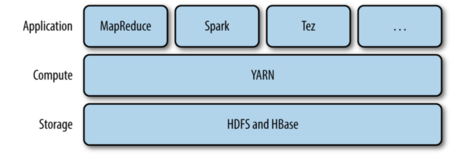
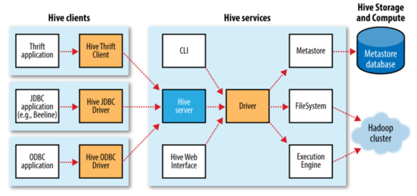

Hadoop, the Definitive Guide
Table of Contents
如何搭建一个 Hadoop 集群可以看这个：http://www.jianshu.com/p/c0f4d30a50b9
Chapter 1 初识 Hadoop
This is a long time to read all data on a single drive—and writing is even slower. The obvious way to reduce the time is to read from multiple disks at once. Imagine if we had 100 drives, each holding one hundredth of the data. Working in parallel, we could read the data in under two minutes.
The first problem to solve is hardware failure: as soon as you start using many pieces of hardware, the chance that one will fail is fairly high. A common way of avoiding data loss is through replication: redundant copies of the data are kept by the system so that in the event of failure, there is another copy available.
总结来说，Hadoop 对数据的存储和分析提供了一种可靠的、可扩展的的平台。
为什么不能用关系型数据库来对大量硬盘上的数据进行批量分析呢？ 如果数据访问模式包含大量的硬盘寻址，那么读取大量的数据集就会很慢。另一方面，如果数据库只是更新一小部分的内容，传统的 B 树更加有优势。
MapReduce 适合一次写入、多次读取的应用，关系数据库更适持续更新的数据集。

MapReduce 对于非结构化数据或半结构化数据非常有效。 MapReduce 尽量在计算节点上存储数据，以实现数据的本地快速访问。数据本地化是它的核心特征。
Hadoop 生态系统
Hadoop 因 MapReduce 和 HDFS 而出名，但是它也泛指一系列相关的项目。
兼容性
Hadoop 升级要考虑到兼容性：API 兼容性、数据兼容性和连接兼容性。
Chapter 2
气象数据集
这个例子中，要写一个挖掘气象数据的程序。
- 使用 awk 处理
首先看下使用 awk 来处理 code
- Hadoop 来处理
map 处理输入的数据，得到 （年，温度）的键值对。
reduce 接收到 (年，[温度列表])， 然后找到最大温度。
这部分的代码见 github.
- 横向扩展
为了实现横向扩展，我们需要把数据存储在分布式文件系统中，一般为 HDFS。
- 数据流
MapReduce 作业是客户端需要执行的一个工作单元：它包括输入数据、MapReduce 程序和配置信息。Hadoop 将作业分成若干个小任务来执行：map 任务和 reduce 任务。
Hadoop 将 MapReduce 的输入数据划分成等长的小数据块，称为“分片”。每个分片构建一个 map 任务。 一个合理的分片大小为 HDFS 的一个块的大小，默认 64M
Hadoop 在存储有输入数据的节点是运行 map 可以获得最佳性能。这就是所谓的“数据本地优化”。map 任务将其输出写入到本地硬盘，而非 HDFS。这是因为它的结果是中间结果，reduce 处理后才是最终结果。 所以，中间结果存到 hdfs 意义不大。
reduce 任务不具有数据本地化的优势。下面是一个 reduce 任务的 MapReduce 数据流
- combiner 函数
Hadoop 允许用户针对 map 任务的输出指定一个 combiner。 combiner 的输出作为 reduce 函数的输入。combiner 属于一种优化方案。
以上面温度的例子来说明。 第一个 map：
(1950, 0) (1950, 20) (1950, 10)第二个 map:
(1950, 25) (1950, 15)reduce 函数调用时输入:
(1950, [0, 20, 10, 25, 15]) # 输出 (1950, 25)但是我们如果用了 combiner 以后，我们就可以提前找到每个 map 任务的输出结果的最高气温。现在 reduce 的输入变成了。
(1950, [20, 25]) - Hadoop Streaming
它提供了 MapReduce 的 API，我们可以用其他的语言来写 map 和 reduce。
Chapter 3 分布式文件系统
当数据集的大小超过一台独立的物理计算机的存储能力时，有必要对它分区并存储到若干的计算机上，也就需要一个分布式文件系统。
这部分主要介绍 HDFS 文件系统。
HDFS 的设计
HDFS 流式数据访问模式来存储超大文件。
- 超大文件
流式数据访问。
一次写入，多次读取时最高效的访问模式。
商用硬件
Hadoop 并不需要运行在昂贵且可靠的硬件上。
低延迟的数据访问
要求低时间的应用不适合 HDFS, 它是为高吞吐量应用优化的。
大量的小文件
namenode 将文件系统的元数据存储在内存中，因此文件系统的文件总数受限于 namenode 的内存容量。 每个文件、目录和数据块的存储信息约占 150B。
HDFS 的概念
HDFS 的块要比磁盘默认的块大很多，如果一个小于块大小的的文件不会占据整个的块空间。
为什么 HDFS 块这么大？原因是为了最小化寻址开销。例如，如果寻址时间为 10ms，而传输速率为 100MB/s，为了使寻址时间仅占用 1%，我们要将块的大小设置为大约 100MB。
块非常适合数据备份进而提供数据容错能力和提高可用性。将每个块复制到少数几个独立的机器上，可以确保块、磁盘或者机器发生故障后数据的恢复。
HDFS 中的 fsck 指令可以显示块信息：
hadoop fsck / -files -blocks
namenode 和 datanode
HDFS 有两类节点以管理者-工作者模式运行，一个是 namenode，一个 datanode. namenode 维护文件系统树以及所有的文件和目录。他们通过：命名空间镜像文件和编辑日志文件来永久的保存在本地的本地磁盘上。
客户端(client) 代表用户通过与 namenode 和 datanode 交互来访问整个文件系统。 datanode 是系统的工作节点，它根据需要存储并检索数据块，并定期向 namenode 发送他们所存储的块的列表。 如果 namenode 机器毁掉，我们的文件将会丢失，因为我们无法重建我们的数据。Hadoop 提供了两种方式：
- 备份元数据持久状态的文件
- 运行一个辅助的 namenode, 但它不能被用作 namenode。
联邦 HDFS
在联邦环境下，有多个的 namenode，它们管理不同的命名空间，它们之间互相不影响。
命令行接口
在配置中，我们需要设置 fs.default.name，例如 hdfs://localhost/, 用于设置 Hadoop 的默认文件系统。 第二个属性，dfs.replication, 设置为 1，这样它就不会将文件系统块复制 3 份了。
文件系统的基本操作
hadoop fs -copyFromLocal input/docs/quangle.txt hdfs://localhost/user/quangle.txt
我们其实可以简化这个操作
hadoop fs -copyFromLocal input/docs/quangle.txt /user/quangle.txt
也可以使用相对路径, 复制到 HOMΕ 中
hadoop fs -copyFromLocal input/docs/quangle.txt quangle.txt
还有
hadoop fs -mkdir ...
hadoop fs -copyToLocal ...
Java 接口
从 Hadoop URL 读取数据
InputStream in = null;
try {
in = new URL("hdfs://host/path").openStream();
// process in
} finally {
IOUtils.closeStream(in);
}
通过 URLStreamHandler 实例以标准输出方式显示 Hadoop 文件
public class URLCat{
static {
URL.setURLStreamHandlerFactory(new FsUrlStreamHandlerFactory());
}
public static void main(String[] args) throws Exception {
InputStream in = null;
try {
in = new URL(args[0].openStream());
IOUtils.copyBytes(in, System.out, 4096, false);
} finally {
IOUtils.closeStream(in);
}
}
}
我们可这样运行
hadoop URLCat hdfs://localhost/user/tom/quangle.txt
数据流
下面先看文件的读取。 为了了解客户端以及与之交互的 HDFS、namenode 和 datanode 之间的数据流是什么样的，我们看下图。
客户端通过调用 FileSyste 对象的 open() 方法来打开要读取的文件， 对于 HDFS 来说，这个对象是分布式文件系统的一个实例。分布式文件系统通过 RPC 来调用 namenode，以确定文件块的起始位置。对于每一个块，namenode 返回存有该块副本的 datanode 地址。客户端读取数据，块是按照打开 DFSInputStream 与 datanode 新建连接的顺序读取的。
如果 DFSInputStream 在于 datanode 通信时遇到错误，它会尝试从这个快的另外一个最邻近的 datanode 读取数据。 它也记住那个故障 datanode，以保证以后不会反复读取该节点上后续的块。这个设计的一个重点是，namenode 告知客户端每个块的最佳 datanode，并让客户端直接连接到 datanode 检索数据。这里有个节点“彼此近邻”的问题？如何定义它？ 一个简单的方式：把网络看做一个树，两个节点间的距离是它们到最近共同祖先的距离和。
下面看下文件的写入。
我们要考虑的是如何新建一个文件，把数据写入到文件，最后关闭该文件。

首先 namenode 会执行各种的检查来确保这个文件不存在以及客户端有新建文件的权限。 DitributedFileSytem 向客户端返回一个 FSDataOutputStream 对象，客户端开始写入数据。 注意其中的 4、5 的过程，其中三个 datanode 是节点的副本，默认为 3 个。
上图解释了，我们应该如何去放复本。默认策略时候运行客户端的节点上放第一个复本。（如果客户端运行在集群外，就随机选择一个节点，但是要避免太满或太忙的节点）。第二个选在与第一个不同且随机另外选择的机架。
一致模型
新建文件以后能够立即可见，但是写入文件内容不能保证立即可见。只有在写入超过一个块对新的 reader 才可见。 但是我们可以通过使用 sync() 来使得所有缓存与数据节点强行同步。
在 HDFS 中关闭文件其实还隐含执行 sync() 方法。
Path p = new Path("p")
OutputStream out = fs.create(p);
out.write("content".getBytes("UTF-8"));
out.close();
assertThat(fs.getFileStatus(p).getLen(), is(((long) "content".length())));
通过 distcp 并行复制
distcp 是一个分布式复制程序，它可以从 Hadoop 中复制大量的数据， 也可以将大量的数据复制到 Hadoop 中。它的一个典型的应用是在两个 Hadoop 集群间复制数据。
例如
hadoop distcp hdfs://namenode1/foo hdfs://namenode2/bar
这个指令把第一个集群的 /foo 目录复制到第二个集群的 /bar 目录下，所以第二个集群的目录变为了 /bar/foo。
distcp 是作为一个 MapReduce 作业来实现的，这里没有 reducer, 只有 map。
一个有效的替换是对
hadoop distcp file1 file2
# 替换
hadoop fs -cp
也可以对文件夹操作
hadoop distcp dir1 dir2
# if dir2 does not exist, it will be created.
# else it will be dir2/dir2
# if you dont want it, you can use -overwrite option
我们可以使用 update 来更新那些改变的文件
hadoop distcp -update dir1 dir2
如果两个集群的 HDFS 版本不同，我们可以使用 webhdfs 来代替前面的。
Hadoop 存档 （这部分第 4 版没了）
每个块存到 namenode 的内存中，因此如果 Hadoop 来存小文件是非常不适合的。
hadoop archive -archiveName file.har /my/files /my
删除一个 har 文件
hadoop fs -rmr /my/files.har
Chapter 4 YARN
YARN 是 Hadoop 集群的资源管理系统。YARN 提供了一套 API，但是用户一般不会直接调用。用户一般会调用基于 YARN 的上层的服务的 API，资源管理的细节对用户都是透明的。

看上图，我们应该很清楚这种架构设计。 这一章，我们会对 YARN 有一个大体的了解，对于后面学习 Hadoop 分布式处理框架很有帮助。
YARN 运行一个 APP
YARN 主要通过两个长期运行的服务：一个资源管理器（每个集群一个）和 node 管理器（每个节点上都会有），它用来监控和启动容器（指的是 Unix process 或一个 Linux cgroup）。
YAYN scheduling
- FIFO
- Capacity Scheduler
- Fair Scheduler
Chapter 5 Hadoop I/O
Chapter 6 MapReduce 应用开发
它的编写流程如下：
- map 函数
- reduce 函数
- 单元测试
- 驱动程序测试
- 集群调试
- 优化
配置 Configuration
我们可以先定义配置文件
Configuration conf = new Configuration();
conf.addResource("configuration-1.xml");
assertThat(conf.get("color"), is("yellow"));
assertThat(conf.getInt("size", 0), is(10));
assertThat(conf.get("breadth", "wide"), is("wide"));
我们可以使用多个配置文件，后面的会覆盖前面的，如果被标记了 final
MapReduce 工作机制
Chapter 12 Hive
Hive 安装没搞定，用的 Docker 来搞的。。。
Hive shell
show tables;
首先 Hive 大小写不敏感，同时我们可以使用 Tab 来补全关键字和函数。
我们也可以指定文件
hive -f script.q
我们也可以这样, 不用末尾分号
hive -e "select * from store_sales"
-- 下面会排除查询结果之外的信息
hive -S -e ""
下面，我们举一个具体的例子，就是前面我们的天气的数据。
create table records (year string, temperature int, quality int)
row format delimited fields terminated by '\t';
这样我们就创建了一个 records 表。
然后我们将 sample 数据导入到 records 表中。数据我们可以在这里找到。
load data local inpath 'sample.txt' overwrite into table records;
我们查看一下 records 表的内容就可以看到数据了。
select * from records;
-- 找到每年的最高温度
select year, max(temperature) from records group by year;
下面看下 Hive 的体系结构

MetaStore
MetaStore 是 Hive 元数据的存储位置。MetaStore 分为两个部分：服务和后台数据的存储。 默认情况，也就是内嵌模式，metastore 服务和 hive 服务运行在同一个 JVM 中。后面的分别是本地 metastore 和远程 metastore。只有远程 metastore 中的 metastore 服务和 hive 服务不是运行在同一个 JVM 中。
Hive 和 传统数据库的比较
| 读时模式 | 写时模式 | 更新 | 事务 | 索引 | |
|---|---|---|---|---|---|
| Hive | 支持 | 不支持 | |||
| 传统 | 不支持 | 支持 |
HiveQL
下面是它们的一些区别：
Hive 同时支持很多的数据类型，比较特殊的是它还支持数组类型：
上面是一些基本类型，下面是一些比较复杂的类型

对于复杂类型，我们举个例子就很好理解了：
create table complex (
c1 array<int>,
c2 map<string, int>,
c3 struct<a:string, b:int, c:double>,
c4 uniontype<string, int>
);
然后后我们可以
select c1[0], c2['b'], c3.c, c4 from complex;
操作和函数
我们在 Hive 中通过命令
show functions;
describe function <func-name>;
可以查看支持的命令，一共有 216 个。
类型转换
Hive 会做一个隐式类型转换，它的原则是将小的范围向更大范围进行转换。
表
Hive 表中内容一般存在 HDFS 中，或者本地文件系统或 s3 这样的存储中。 在 Hive 中创建一个表，默认是 Hive 管理表中的内容，也叫 托管表 。 在加载数据的时候它会把数据移动到它的仓库目录中。
外部表的数据有自己来控制。
CREATE EXTERNAL TABLE external_table (dummy STRING) LOCATION '/user/tom/external_table';
LOAD DATA INPATH '/user/tom/data.txt' INTO TABLE external_table;
分区和桶
Hive 把表组织成“分区”。这是一种根据分区列（partition column）来对表进行粗略划分的机制，可以加快查询的速度。 表或者分区可以进一步划分为“桶”。
分区
对分区使用的一个好的例子是日志。我们可以对日志按照日期进行分区，比如每天的日志在一个分区中，这样查询就会非常的高效。 对表分区不限于一个维度，我们可以有多个，例如国家。 在查询的时候分区，不会影响查询的速度。
分区是通过 PARTITIONED BY 来定义的，下面是假想的日志记录
CREATE TABLE logs (ts BIGINT, line STRING) PARTITIONED BY (dt STRING, country STRING);我们把数据加载到数据表中，要显式指定加载的分区值:
LOAD DATA LOCAL INPATH 'input/hive/partitions/file1' INTO TABLE logs PARTITION (dt='2001-01-01', country='GB');文件加载到 logs 表后，结构可能如下：
我们可以通过命令查看分区
SHOW PARTITIONS logs; -- 结果 dt=2001-01-01/country=GB dt=2001-01-01/country=US dt=2001-01-02/country=GB dt=2001-01-02/country=US在 select 中我们可以直接使用
SELECT ts, dt, line FROM logs WHERE country='GB';桶
使用桶的理由有两个：一个是高效；另一个是方便“取样”。取样可以方便我们在更小的数据集上运行测试。
我们使用 CLUSTERED BY 来划分桶使用的列和要划分的桶的个数。
CREATE TABLE bucketed_users (id INT, name STRING) CLUSTERED BY (id) INTO 4 BUCKETS;Hive 会根据 Id 来 hash，然后根据桶的个数取余。 我们还可以对桶根据某个列排序
CREATE TABLE bucketed_users (id INT, name STRING) CLUSTERED BY (id) SORTED BY (id ASC) INTO 4 BUCKETS;这样对每个桶的连接可以变成了归并排序。
将没有分桶的数据插入到分桶的表中：
-- need set hive.enforce.bucketing=true INSERT OVERWRITE TABLE bucketed_users SELECT * FROM users;这里有一个用法
SELECT * FROM bucketed_users TABLESAMPLE(BUCKET 1 OUT OF 2 ON id);我们可能不明白 out of 是干啥的？这里有清楚的解释。
When you create the table and bucket it using the clustered by clause into 32 buckets (as an example), hive buckets your data into 32 buckets using deterministic hash functions. Then when you use TABLESAMPLE(BUCKET x OUT OF y), hive divides your buckets into groups of y buckets and then picks the x'th bucket of each group.
存储格式
存储格式分为“行格式”和“文件格式”。
行格式默认使用的是 Control-A。
导入数据
insert
INSERT OVERWRITE TABLE target SELECT col1, col2 FROM source;或者
INSERT OVERWRITE TABLE target PARTITION (dt='2001-01-01') SELECT col1, col2 FROM source;上面使用了 overwrite 这样会吧 target 表覆盖掉。如果不想这样可以使用 insert into table。
我们还可以使用动态分区来插入表：
INSERT OVERWRITE TABLE target PARTITION (dt) SELECT col1, col2, dt FROM source;多表插入我们可以把 FROΜ 放到前面
FROM source INSERT OVERWRITE TABLE target SELECT col1, col2;FROM records2 INSERT OVERWRITE TABLE stations_by_year SELECT year, COUNT(DISTINCT station) GROUP BY year INSERT OVERWRITE TABLE records_by_year SELECT year, COUNT(1) GROUP BY year INSERT OVERWRITE TABLE good_records_by_year SELECT year, COUNT(1) WHERE temperature != 9999 AND quality IN (0, 1, 4, 5, 9) GROUP BY year;ℂΤΑ𝕊 操作
create table target as select col1, col2 from source;这个操作是原子操作，如果 select 失败，这表不会创建。
表的修改
-- alter table name alter table source rename to target; -- add new column alter table target add columns (col3 string);- 表的删除 drop table 如果是内部表，会删除数据和元数据。如果是外部表会删除元数据。
查询数据
我们可以使用 order by 来全局排序，但是这种排序只用一个 reducer 来做，效率非常的低。 我们其实大部分是不需要全局排序的，这时可以使用 sort by。
from records2
select year, temperature
distribute by year
sort by year asc, temperature desc;
调用外部脚本
在 Hive 中我们可以调用外部的脚本
#!/usr/bin/env python
import re
import sys
for line in sys.stdin:
(year, temp, q) = line.strip().split()
if (temp != "9999" and re.match("[01459]", q)):
print "%s\t%s" % (year, temp)
然后在 Hive 中，
ADD FILE /Users/tom/book-workspace/hadoop-book/ch17-hive/ src/main/python/is_good_quality.py;
from records2
select transform(year, temperature, quality)
using 'is_good_quality.py'
as year, temperature;
- 首先要添加脚本
- 然后将 year temperature quality 传递给 python 脚本
- 然后 python 脚本将输出给 year temperature
连接
内连接
select * from sales; Joe 2 Hank 4 Ali 0 Eve 3 Hank 2以及表 things
SELECT * FROM things; 2 Tie 4 Coat 3 Hat 1 Scarf下面我们使用内连接
SELECT sales.*, things.* from sales join things on (sales.id=things.id); Joe 2 2 Tie Hank 4 4 Coat Eve 3 3 Hat Hank 2 2 Tie外连接首先看看左外连接
SELECT sales.*, things.* FROM sales LEFT OUTER JOIN things ON (sales.id = things.id);如果出现两个表不能匹配的项，左边的表中的数据也可以列出来。
例如下面是输出的结果：
Joe 2 2 Tie Hank 4 4 Coat Ali 0 NULL NULL Eve 3 3 Hat Hank 2 2 Tie同理，还有右外连接，以及全连接
SELECT sales.*, things.* from sales.* right outer join things on (sales.id = things.id); select * from sales.*, things.* from sales full outer join things on (sales.id = things.id);Joe 2 2 Tie Hank 2 2 Tie Hank 4 4 Coat Eve 3 3 Hat NULL NULL 1 Scarf #----full outer join----- Ali 0 NULL NULL NULL NULL 1 Scarf Hank 2 2 Tie Joe 2 2 Tie Eve 3 3 Hat Hank 4 4 Coat半连接
select * from things where things.id in (select id from sales);- map 连接如果一个连接表小到足以放入到内存中，Hive 就可以把每个较小的表放入到 mapper 的内存中执行。
子查询
Hive 对子查询的支持非常的有限。它只支持将子查询放入到 From 中。
SELECT station, year, AVG(max_temperature)
FROM (
SELECT station, year, MAX(temperature) AS max_temperature
FROM records2
WHERE temperature != 9999 AND quality IN (0, 1, 4, 5, 9)
GROUP BY station, year
) mt
GROUP BY station, year;
其中 mt 是别名。
视图
create view valid_records as
select * from records2
where temperature != 9999 and quality in (0, 1, 4, 5, 9);
现在我们查询视图和表其实是一样的
create view max_temperature (station, year, max_temperature)
as
select station, year, max(temperature)
from valid_records
group by station, year;
用户定义函数
如果 Hive 内置的函数不能实现我们的需求时，我们可以通过写用户定义函数（UDF）来实现。
这个函数通过 Java 来写，然后在 Hive 中注册就可以使用了。 具体的用法看 P510